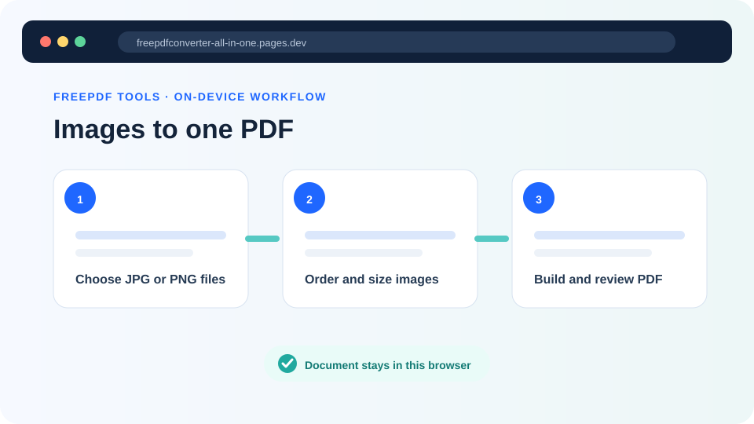
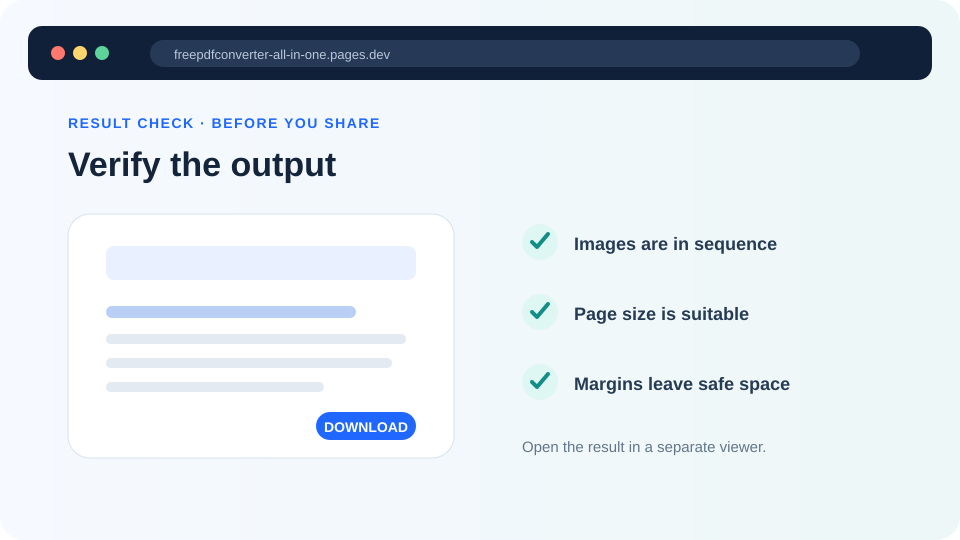

PDF page size: A4 vs Letter
A PDF page size affects printing, margins and how a document fits into another workflow. A4 and US Letter are both common, but they are not interchangeable in every submission or print environment.
Updated September 28, 2026 · FreePDF Tools
Choose A4 when the destination expects it
A4 is common across many countries and is a practical default for reports, letters, scanned forms and office documents that will be printed or submitted using international paper conventions.
Choose Letter for US-oriented workflows
US Letter is common in the United States and in systems designed around US paper dimensions. When the destination specifies Letter, use it rather than relying on automatic scaling.
Image-sized pages have a different purpose
An image-sized page can preserve a photo or screenshot without large margins. It is useful when the page is primarily an image and the PDF is intended for screen viewing rather than conventional printing.
Check the receiving system
Some portals enforce paper size, maximum dimensions or file-size limits. Confirm those rules before creating the final PDF and inspect the output after conversion.


Set the page size
Choose A4 or Letter while converting images to PDF.